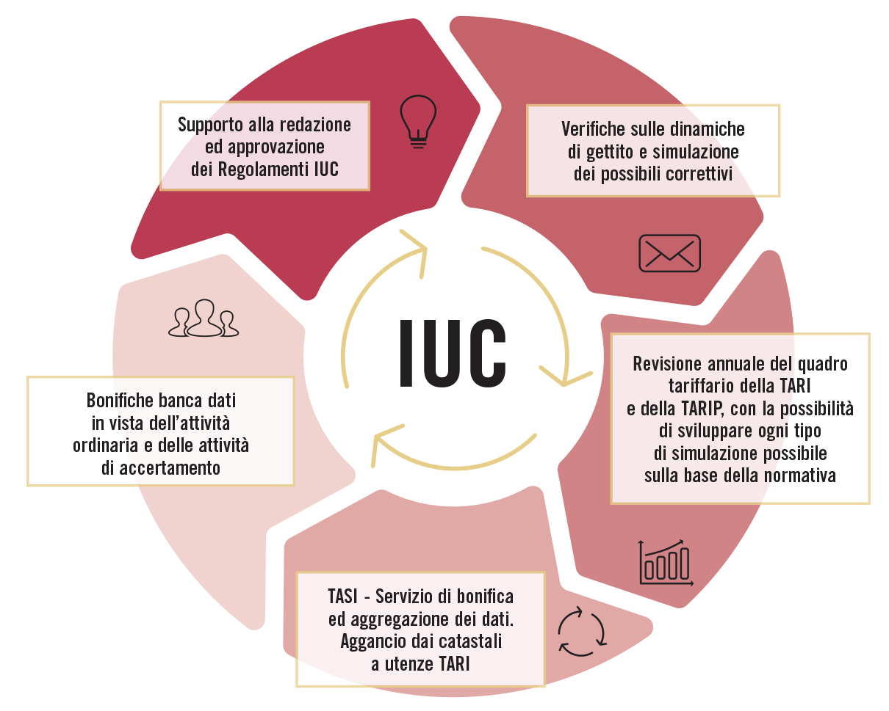
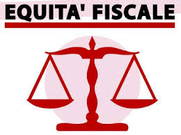
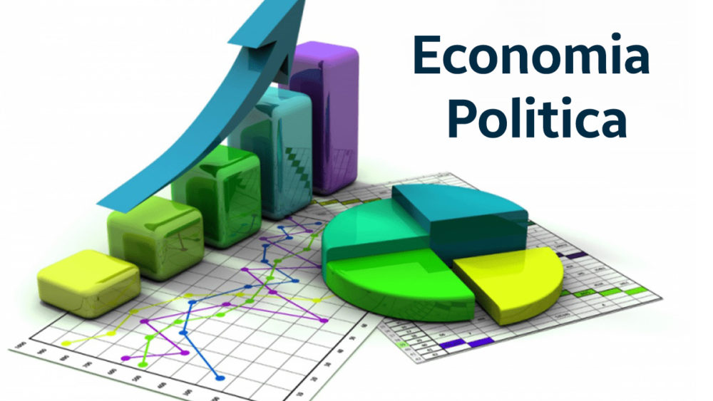

Introduzione ai Tributi
I tributi sono strumenti fondamentali attraverso cui lo Stato finanzia le spese pubbliche. Si dividono principalmente in imposte, tasse e contributi.
Effetti Economici dei Tributi
L’introduzione di un tributo può influenzare il comportamento dei consumatori e delle imprese. Ad esempio, un’imposta può ridurre il consumo di beni inquinanti o favorire determinati investimenti.
Equità e Progressività
Un sistema tributario equo mira alla giustizia sociale, richiedendo un maggiore contributo a chi ha una maggiore capacità contributiva. La progressività è uno dei principi fondamentali del sistema fiscale.
Conclusione
Comprendere il funzionamento dei tributi e i loro effetti è essenziale per una cittadinanza consapevole e per comprendere le dinamiche economiche di uno Stato.
